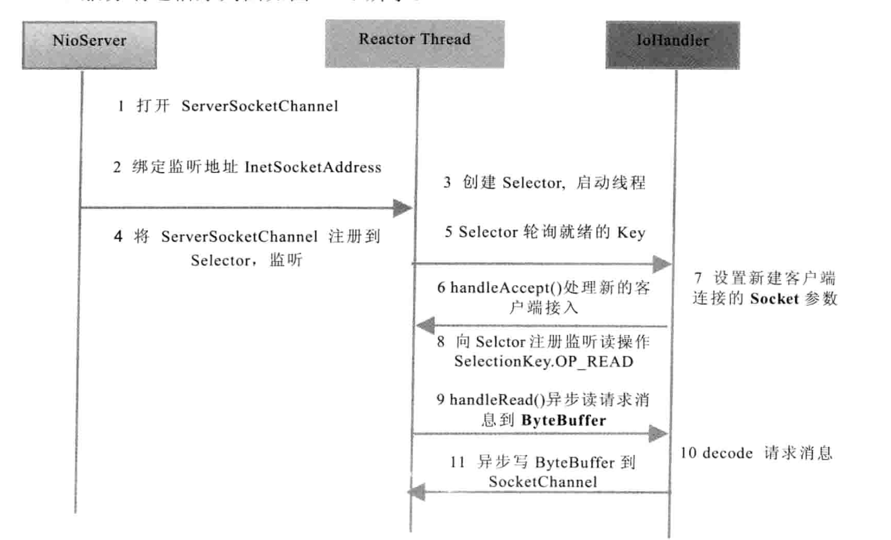
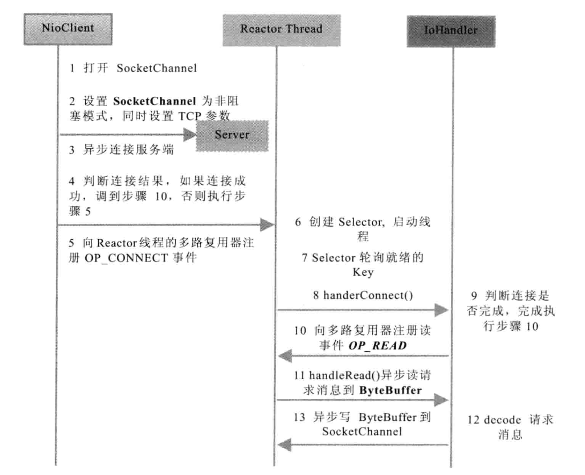

Netty基础入门
网络编程的基本模型是Client/Servlet模型，也就是两个进程之间相互通信，其中服务器端提供位置信息（绑定的IP地址和监听端口），客户端通过连接操作向服务器监听的地址发起请求，通过三次握手建立连接，如果连接建立成功，双方就可以通过Socket进行通信。
1、传统BIO通信编程
BIO的服务端通信模型：通常为每个客户端请求创建一个新的线程进行链路处理，处理完成后，通过输出流返回应答给客户端，线程销毁。也就是典型的“一客户端一线程”模型。
该线程最大的问题就是缺乏弹性伸缩能力，当客户端并发访问量陡然增加后，服务端的线程个数也随之陡增，操作系统的性能会急剧下降。随着并发访问量的继续增加，操作系统会造成堆栈溢出，无法再创建线程，最终导致服务器宕机，无法对外提供服务。
2、伪异步I/O通信编程
伪异步IO通信模型：在BIO通信模型上做了优化，优化的地方是将原来“一客户端一线程”模型，优化成所有客户端一个线程池。避免了每个请求创建一个独立线程造成服务器资源耗尽的问题，但是依旧避免不了操作系统层面IO为同步阻塞的问题，无法从根本上解决这个问题。
通过对I/O流的API文档进行分析，我们可以知道都和写操作都是同步阻塞的，阻塞的时间取决于对方I/O线程的处理速度和网络I/O的传输速度。
3、NIO通信编程
NIO通信模型：NIO通信模型采用了新的I/O库，不同与传统输入输出流，NIO的底层是非阻塞的，它是高速的，面向缓冲区的I/O。NIO有三个部分，分别为：缓冲区（Buffer）、通道（Channel）以及多路复用器（Selector）。其中Channel是全双工的既能写，又能读。多路复用器（Selector）是NIO通信模型的核心。Selector会不断地轮询注册在其上面的Channel，如果某个Channel上面有新的TCP连接接入、读和写事件，这个Channel就处于就绪状态，会被Selector轮询出来，然后通过SelectionKey获取就绪Channel的集合，进行后续的I/O操作。
一个多路复用器Selector可以同时轮询多个Channel，由于JDK使用了操作系统的epoll()代替传统的select实现，所以最大连接数句柄没有限制。这就意味着只需要一个线程负责Selector的轮询，就能处理成千上万的客户端发来的请求。
NIO服务端通信时序图如下

NIO客户端通信时序图如下

4、AIO通信编程
JDK1.7以后升级了NIO类库，升级后的NIO类库被称为NIO2.0， Java正式提供了异步文件I/O操作。同时提供了与UNIX网络编程事件驱动I/O对应的AIO，NIO2.0的异步套接字通道是真正的异步非阻塞I/O，它不再需要通过多路复用器对注册的通道进行轮询操作，即可实现异步读写，从而简化NIO的编程模型。
5、不同I/O模型的对比
| BIO | 伪异步I/O | NIO | AIO | |
|---|---|---|---|---|
| 客户端个数：I/O线程 | 1:1 | M:N | M:1 | M:0 |
| I/O类型（阻塞） | 阻塞I/O | 阻塞I/O | 非阻塞 | 非阻塞I/O |
| I/O类型（同步） | 同步I/O | 同步I/O | 同步I/O(I/O多路复用) | 异步I/O |
| API使用难度 | 简单 | 简单 | 非常复杂 | 复杂 |
| 调试难度 | 简单 | 简单 | 复杂 | 复杂 |
| 可靠性 | 非常差 | 差 | 高 | 高 |
| 吞吐量 | 低 | 中 | 高 | 高 |